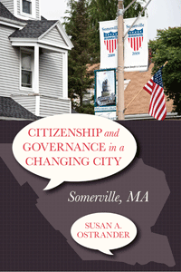

How community influences contribute to civic and political engagement in a city undergoing rapid change
How community influences contribute to civic and political engagement in a city undergoing rapid change


 How community influences contribute to civic and political engagement in a city undergoing rapid change
How community influences contribute to civic and political engagement in a city undergoing rapid change

|  |
Citizenship and Governance in a Changing CitySomerville, MASusan A. Ostranderpaper EAN: 978-1-43991-013-9 (ISBN: 1-4399-1013-8) |
"With Citizenship and Governance in a Changing City, Susan Ostrander probes important questions about the nature of citizenship, the dynamics of immigrant incorporation, and the role of voluntary associations in local democracy. By providing a grounded, nuanced examination of community action in Somerville, Massachusetts, she surfaces both conditions that support and key barriers to promoting effective civic and political engagement and vibrant, inclusive democratic practice at the local level. This book is an important and welcome contribution to current debates about civic engagement, urban governance, and local democracy."
—Robert Chaskin, Associate Professor and Deputy Dean for Strategic Initiatives at the University of Chicago
Overcoming a past of deteriorating homes, empty storefronts, and corrupt city administrations, Somerville, Massachusetts, just outside of Boston, today proudly defines itself as a longtime immigrant city, a historically blue collar town, and a hip new urban center with a progressive city government.
In Citizenship and Governance in a Changing City, Susan Ostrander shows how beneath current high levels of engagement by Somerville residents lies a struggle about who should be the city's elected leaders and how they should conduct the city's affairs. It is a struggle waged between diverse residents�relatively new immigrants and a new middle class�trying to gain a foothold in democratic participation, and the city's political "old guard."
Citizenship and Governance in a Changing City informs current debates about the place of immigrants in civic and political life, and the role of voluntary associations in local politics and government. In the process, Ostrander provides useful lessons for many midsize urban communities.
Excerpt available at www.temple.edu/tempress
"Clearly and effectively written, Citizenship and Governance in a Changing City lets its subjects speak, and they do so with passion and insight. Ostrander gives us an excellent book, well documented and comprehensive. She tells an uplifting and compelling urban story of civic struggle and hope."
—Jon Van Til, Professor Emeritus of Urban Studies and Community Planning at Rutgers University, Camden
"[A] valuable contribution to our understanding of the struggles newcomers face in the process of gaining full community membership.... Citizenship and Governance in a Changing City is a fascinating book that illustrates the life world of three different groups, who all struggle with ongoing changes in their city. Thanks to this in-depth study the reader gets to know the city and its residents through the rich qualitative data and the excerpts that Ostrander provides throughout the text. The book is suitable for researchers and policy makers as well as community members with an interest in debates about the role of immigrants and other newcomers and their participation in urban civic and political life. It furthermore provides in-depth insights into the influence of voluntary associations in creating a space for immigrants� voices in a diverse and changing city."
—Voluntas: International Journal of Voluntary and Nonprofit Organizations
"[E]xcellent....this volume offers an important contribution to the study of citizenship and governance."
—American Journal of Sociology
"Ostrander�s book is worthy of attention as it expands the current discussion of citizen participation at the local level with an emphasis on incorporating immigrant populations. This book deserves a place on the shelves of scholars interested in participatory democracy and civil society development as well as policy makers interested in immigrant engagement."
—Nonproft and Voluntary Sector Quartery
"Ostrander provides excellent insight into the dynamics of interaction between immigrants.... Her comprehensive ethnographic study of Somerville, Massachusetts�a town just outside of Boston with an early history of 'Yankee flight,' later manufacturing growth, industrial decline, and a more recent arts-and-culture based revival�contributes significantly to the literature on immigrant acculturation and new/old destinations.... Overall Ostrander has written a compelling and fascinating book. Its focus on a small town with a diverse immigrant past and a complicated immigrant present is a welcome addition to the literature on migrant destinations. She interviews a wide range of key informants in a series of rich ethnographic interviews and the community-based nature of her study�and investment in the place�is both apparent and admirable.... [T]his is an excellent book and is highly recommended."
—Journal of Regional Science
"In its best moments, Citizenship and Governance in a Changing City details tensions between [diverse] groups in ways reminiscent of the obvious pleasure that authors of classic community studies took when delving into the complex social fabric of their communities�. [T]he book succeeds in raising important questions and generating critical reflection.�
—Contemporary Sociology
Acknowledgments
1. Introduction
2. Overview of History, Demographics, and Politics
3. Major Redevelopment, Community Involvement, and Shared Governance
4. Old and New Immigrant Experiences, Today and Yesterday
5. Immigrant Civic and Political Engagement
6. Gentrification, Resident Displacement, and a Common Vision for the City�s Future
7. Extending Social Citizenship, Remaking City Governance
Notes
References
Index
Susan A. Ostrander is Professor of Sociology, School of Arts and Sciences, and Professor, Jonathan M. Tisch College of Citizenship and Public Service at Tufts University. She is author of Money for Change: Social Movement Philanthropy at Haymarket People's Fund and Women of the Upper Class (both Temple).
Urban Studies
Sociology
Immigration Studies
© 2015 Temple University. All Rights Reserved. This page: http://www.temple.edu/tempress/titles/2265_reg.html.